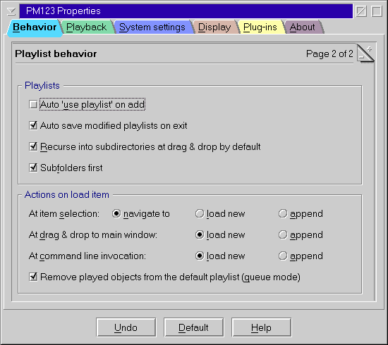

PM123's Configuration Settings 2/2

Navigation
- Alternate slider

- Alternate navigation is available in playlist mode to navigate directly through the entire playlist.
It is activated by pressing the Alt key while the main window has the focus.
You can choose between three types of behavior:
- Song only
This allows you to use the slider to jump to the beginning
of an arbitrary song within a playlist.
- Song & time
This option will map all songs in the playlist to equidistant slices of the slider.
Within this blocks you can navigate to an relative location within the song item
(if it has finite length).
- Time only
This will navigate within the currently loaded playlist at a linear time scale
as if it were one very long song. If the total playing time of the playlist
is unknown (e.g. because a radio stream is part of the it)
alternate navigation will fall back to "Song & time".
Remote control
- Pipe name
- Specify the name of the named pipe that is used to control PM123 remotely.
Only one instance of PM123 can listen at a certain pipe name.
The pipe name must start with \PIPE\.
If you want to control different instances remotely at the same time,
they must use different pipe names and therefore different configuration files.
Otherwise the pipe interface of the second instance will be deactivated.
Streaming audio
- HTTP proxy
- Specify the name or numeric IP address of your HTTP proxy server here.
- port
- Specify the port of your HTTP proxy server.
- User name
- This is your HTTP authentication name.
- password
- This is your HTTP authentication password.
- Buffer size
- Specifies the read ahead buffer size (useful when playing across a network or from a streaming source).
You can disable the buffer having chosen the zero size, but it will dramatically decrease
player performance.
- Fill x% of the buffer before playing
- Fills the buffer (see above) before playing.